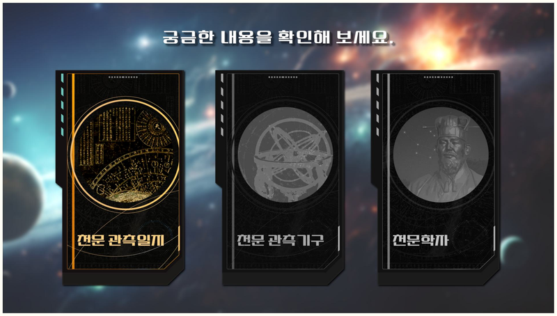
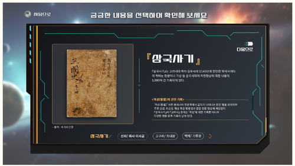
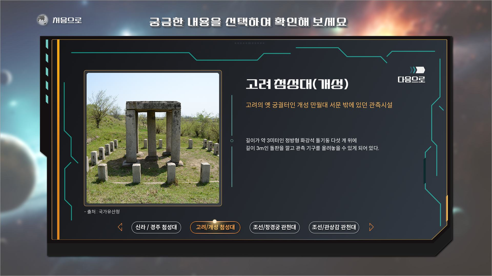
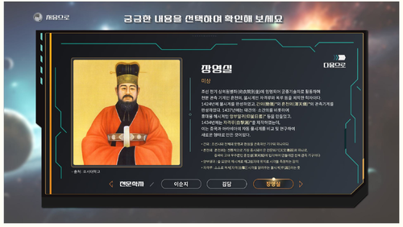
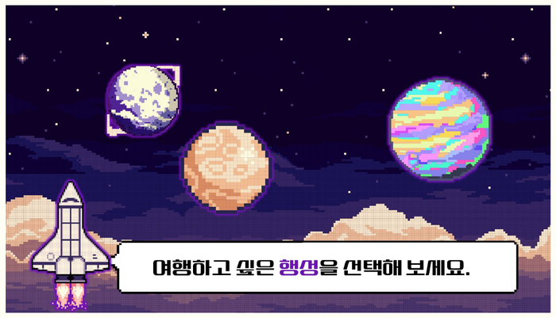
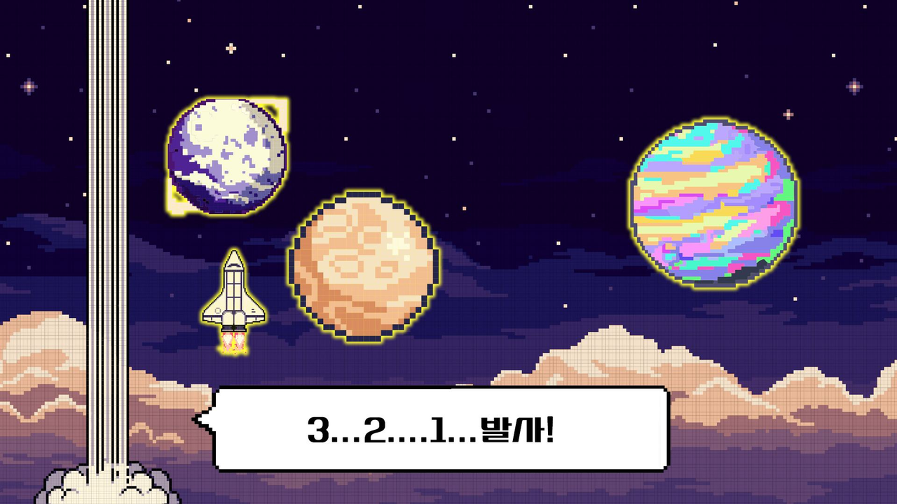
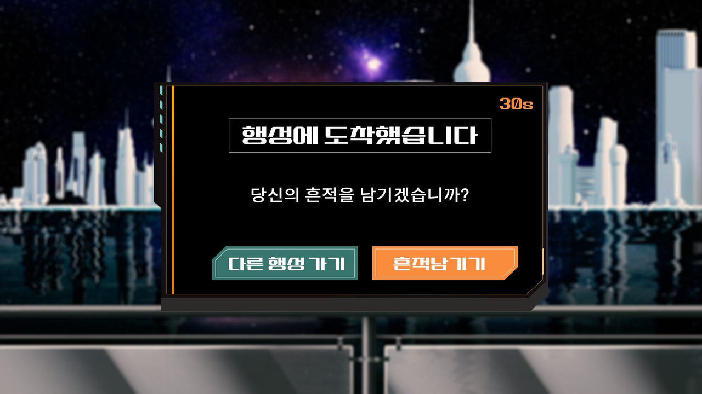
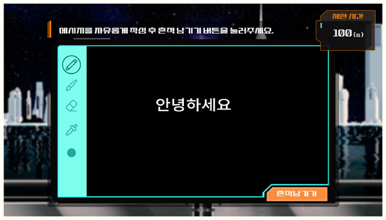
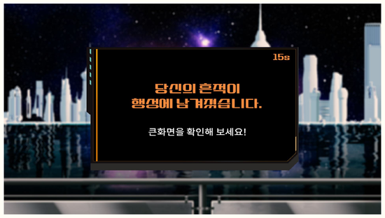

디자인 시스템
- 톤앤 매너
- 우주선과 우주여행 컨셉의 공간 구축. 전시 주제에 맞추어 우주선 내부 같은 컨셉의 텍스트와 컬러 조합, 전시 주제에 맞추어 3구역에 각각 포인트 컬러를 다르게 구성하여 공간 구분을 둠.
- 색채 계획
- 미래적인 색채를 사용하여 우주선 내부의 모습을 표현. 검은색 바탕으로 짙은 회색에 조명색을 표현하는 오렌지색, 민트색, 화이트색을 사용하여 비상등이 켜진 우주선 내부 분위기. 화이트 바탕에서는 보라색과 청록색을 활용한 우주선 벽면 디자인.
Point Color
Base Color
- 폰트타입
-
설립체 본문 스포카한산스옛날과 현대가 조화로운 우주적 공간. 80~90년대 한국 간판을 모티브로 현대 해석된 폰트로 옛스러운 느낌을 주면서 우주공간에 쓰이는 폰트와 유사성을 주는 폰트로 과거와 현재, 미래를 아우르는 전시 분위기를 조성.
Kiosk 1
우주선 안 컴퓨터 · 정보보기
3가지 카테고리를 폴더형식으로 묶어 보여주는 방식. 우주선 컨셉에 맞추어 공중에 띄워지는 화면으로 제작, 벽면 태블릿 2대 설치
- Keyword
- 우주선 안 컴퓨터, 정보보기
- Design Direction
- 3가지 카테고리(천문 관측일지, 천문 관측기구, 천문학자)를 폴더형식으로 묶어 보여주는 방식. 우주선이라는 컨셉에 맞추어 공중에 띄워지는 화면컨셉으로 제작. 클릭 시 불이 들어오거나 접히는 애니메이션을 넣음.
- Visual Elements
- 벽면 태블릿이 2대가 설치되어 서서 눌러볼 수 있는 콘텐츠로 구성.

화면설계서 · 전체 플로우
-

① 천문 관측일지
삼국사기 -

② 천문 관측기구
고려 첨성대 -

③ 천문학자
장영실
유휴 화면에서 카테고리 버튼 선택 시 팝업창이 중앙에서 펼쳐지며 열리는 모션(0.3초) 적용. 버튼 선택 시 해당 버튼은 흑백에서 컬러로 전환되어 이미 확인한 항목을 구분.
Kiosk 2
우주여행 · 방명록
전시 마지막 순서, 다른 행성으로 여행을 떠나고 방명록을 남기는 게임무드 컨셉. 조작 시 프로젝터로 송출되는 화면이 변경됨
- Keyword
- 우주여행, 방명록, 게임무드
- Design Direction
- 전시의 마지막 순서에 맞게 미래에는 다른 행성에 여행 갈 수 있고 방명록을 남길 수 있다는 컨셉으로 제작.
- Visual Elements
- 키오스크에서 조작 시 프로젝터로 띄워지는 화면이 변경됨. 그림판으로 그린 그림이 프로젝터에 적용되어 보여짐.

화면설계서 · 전체 플로우
-

① 발사
3···2···1···발사! -

② 행성 도착
흔적 남기기 선택 -

③ 방명록
그림판 작성 -

④ 완료
흔적 남기기 완료
체험자가 일정 시간 이상 동작이 없는 경우 자동으로 유휴 화면으로 복귀. 키오스크에서 남긴 메시지는 프로젝터 화면(나의 우주)에 실시간으로 반영되어 전시 공간 전체에 노출됨.